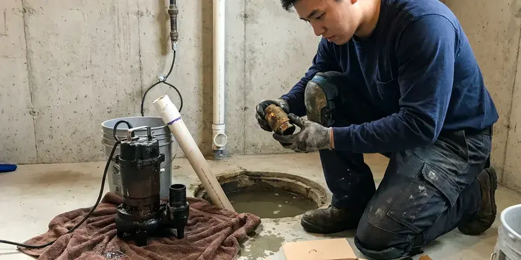
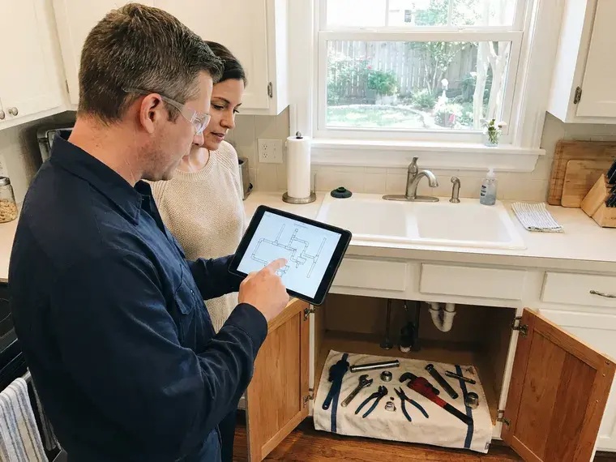
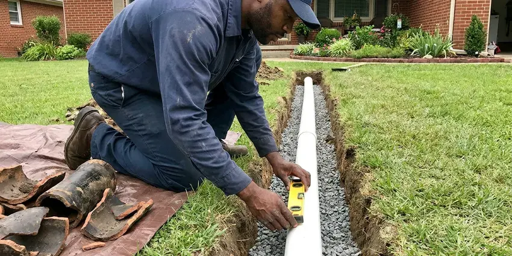

Pipe Replacement in Badger, AK
For long-term pipe replacement solutions in Badger, AK, trust the experienced plumbers at CKN Plumbing.
- Upfront Pricing
- Licensed & Insured
- Permits and Inspections Handled
- Small, Planned Wall Openings
Need New Pipes? Get a Free Estimate in Badger, AK.
We cover floors and furniture and clean up at the end of every workday.
Professional Pipe Replacement Services in Badger, AK
CKN Plumbing replaces corroded galvanized, brittle polybutylene and leak-prone copper with modern PEX-A or Type L copper. We handle partial replacements, whole-home repipes and drain line upgrades in single-story slab homes and two-story houses alike.
Our expertise includes:
- Whole-home repiping with PEX or copper
- Slab leak pipe repair and replacement
- Whole-home repipes with PEX-A manifolds or copper trunk lines

Additional Plumbing Replacement Services in Badger, AK
When repairs are no longer enough, our replacement services in Badger, AK deliver modern, efficient equipment installed right.




Sump Pump Replacement near Badger


Customers
Why Choose CKN Plumbing for Pipe Replacement in Badger, AK?
We prioritize efficient service and clear communication, ensuring you understand every step of the pipe replacement process.
- Quality Materials, We use only high-grade, long-lasting materials like PEX and copper, providing a durable and reliable plumbing system for your home.
- Clear Communication, We keep you updated throughout the entire pipe replacement process, from initial assessment to project completion.
- Clean Jobsites, We protect floors and furniture and leave the house clean at the end of every day.
Citywide Coverage
From downtown Badger to the surrounding suburbs, our technicians are always ready to respond to your pipe replacement needs quickly and efficiently.
Experienced Team
Our plumbers have repiped many slab homes and know how to route lines through attics, closets and interior walls cleanly. They plan every drop before cutting so drywall repair stays minimal.
Safety-First Approach
Safety is paramount in all our pipe replacement projects, and we carefully follow all safety protocols to protect your home and our team in Badger, AK.
Trusted Certified Badger Plumbing Services Professionals
At CKN Plumbing, we take pride in providing licensed, certified plumbing services throughout Badger, AK. Backed by recognized industry credentials, our experienced plumbers combine technical skill with genuine customer care. Whether it is repair, installation, or maintenance, we follow strict safety and quality standards to deliver long-lasting results you can trust.
Call Us Now PHCC Plumbing Contractor Recognition
PHCC Plumbing Contractor Recognition Better Business Bureau (BBB) Accreditation
Better Business Bureau (BBB) Accreditation Angi Certified Pro
Angi Certified Pro ISO 9001 Quality Management Certification
ISO 9001 Quality Management CertificationDependable Pipe Replacement Services in Badger, AK
Copper Pipe Replacement in Badger, AK
Copper piping is a long-standing, proven choice known for its durability and resistance to corrosion. While it's a premium material, its longevity often makes it a cost-effective solution over time. CKN Plumbing offers expert copper pipe replacement for sections or entire homes in Badger, AK. Our plumbers are skilled in the precise soldering and installation techniques required for copper, ensuring a leak-proof and robust plumbing system that holds up season after season.

Emergency Pipe Replacement in Badger, AK
A burst pipe is a plumbing emergency that requires immediate attention to prevent extensive water damage. CKN Plumbing offers emergency pipe replacement services across Badger, AK. Our rapid response team is equipped to quickly assess the damage, shut off the water, and perform the necessary repairs or replacements. We understand the urgency of these situations and work diligently to restore your plumbing system and minimize disruption to your home.
Commercial Pipe Replacement in Badger
Beyond residential services, CKN Plumbing also provides commercial pipe replacement for businesses and properties in Badger. Commercial plumbing systems often face higher demands and require specific knowledge. Whether it's replacing supply lines in an office building, drainage pipes in a restaurant, or addressing complex industrial piping, our experienced commercial plumbers ensure limited downtime and durable solutions tailored to your business needs.
Slab Leak Pipe Repair and Replacement in Badger
Slab leaks, where pipes under your concrete foundation leak, are a significant concern for homeowners in Badger. These leaks can cause foundation damage, mold growth, and wasted water. CKN Plumbing uses modern leak detection technology to pinpoint the exact location of the leak. Depending on the severity and accessibility, we offer targeted pipe repair or rerouting and replacement solutions to permanently resolve the issue, protecting your home's structural integrity.
Galvanized Pipe Replacement in Badger, AK
Many older homes in Badger, AK still have galvanized steel pipes, which are prone to rust and corrosion on the inside. This leads to reduced water pressure, discolored water, and eventual leaks. CKN Plumbing provides comprehensive galvanized pipe replacement services, removing these failing pipes and installing new, modern materials. Upgrading from galvanized pipes not only improves your water quality and pressure but also protects your home from potential water damage caused by deteriorating plumbing.
Burst Pipe Repair & Replacement in Badger, AK
Homes here commonly use heat tape, insulated chases, and supply lines buried deep below the frost line to keep water moving all winter. Cold snaps can lead to burst pipes, especially in exposed areas or unheated spaces. When a pipe bursts in your Badger, AK home, it causes immediate water damage and requires urgent attention. Our team provides emergency service to shut off water, remove damaged sections, and replace them with new, more freeze-resistant piping, often PEX, to prevent future occurrences. We work fast to minimize disruption and water loss.
PEX Pipe Replacement in Badger
PEX (cross-linked polyethylene) piping has become a common choice for residential pipe replacement due to its flexibility, affordability, and resistance to freezing. Homes here commonly use heat tape, insulated chases, and supply lines buried deep below the frost line to keep water moving all winter. Unlike rigid pipes, PEX can expand, reducing the risk of burst pipes during unexpected cold snaps. CKN Plumbing specializes in PEX installation, which often allows for less invasive replacement methods compared to traditional materials. This modern solution offers excellent performance and water quality for your home.

PEX Repiping in Badger
PEX-A is flexible, resists scale buildup and expands slightly if water freezes, which helps in colder homes. We use expansion fittings that keep the full inside diameter of the pipe for better flow. Systems can be run as a home-run manifold with a shutoff for each fixture or as a trunk and branch layout. PEX installs faster than copper with many fewer fittings in the walls. It is our most requested repipe material.
Pipe Replacement Near Me in Badger, AK
If you are searching for pipe replacement near me, you want a local plumber who knows how homes in your area were built. CKN Plumbing serves Badger with repipe crews who understand slab foundations, attic routing and local inspection requirements. We can often inspect and quote within a few days.
A nearby team also means faster response if a leak shows up before your scheduled repipe. We can patch the urgent problem and fold it into the larger project. Call us for a straightforward, written estimate.
CKN Plumbing at a Glance
- Fully licensed plumbing team covering Badger, AK
- Same-day appointments and 24/7 emergency response
- Clear written estimates, no hidden fees
- 4.9-star rated by 309+ Alaska customers
Badger Map
Badger Information
- Population
- 19,031
- Area codes
- Local
- Service area
- Badger and communities within 40 miles
- Nearby
- Fairbanks, Steele Creek, College, Chena Ridge
Shifting soil and seasonal temperature swings stress older plumbing, so investing in quality, properly installed pipe replacement in Badger, AK helps prevent costly slab leaks and burst pipes, protecting your home's foundation and interior.
Expert Services
Trust our professionals for reliable CKN Plumbing solutions in Badger, AK.
Our Specialized Plumbing Services in Badger, AK
At CKN Plumbing, we provide a complete range of plumbing services across Badger, AK. From leak detection to full system installations, our team ensures fast, precise, and affordable service for both residential and commercial properties. Explore our core services below:


How Our Pipe Replacement Process Works in Badger, AK
At CKN Plumbing, we follow a clear, step-by-step process for every pipe replacement project in Badger, AK, ensuring quality results and customer satisfaction.
Request a Quote
Contact CKN Plumbing by calling (928) 470-9007 or filling out our online form to schedule an initial consultation. We will discuss your pipe issues and arrange a good time for an on-site assessment.
On-Site Assessment
Our expert plumber will visit your Badger home to carefully inspect your plumbing system, identify the problematic pipes, and determine the best replacement strategy. We will provide a detailed, transparent estimate.
Professional Installation
Once you approve the estimate, our team will carefully replace the old or damaged pipes using high-quality materials and proven techniques. We work efficiently and cleanly, minimizing disruption to your home.
Frequently Asked Questions About Pipe Replacement in Badger
The cost of pipe replacement in Badger, AK varies a great deal depending on the extent of the damage, the type of pipes being replaced, and the materials chosen. A small section replacement might range from $500 to $2,500, while a full home repipe could be anywhere from $4,000 to $15,000 or more. We provide transparent, upfront pricing after a thorough assessment.
Yes, most homeowners stay home during the project. Water is off only during working hours, and we keep work areas safe and tidy.
The timeline depends on the scope. A small, targeted section replacement might take a day or two. A whole-home re-pipe for an average-sized house can take anywhere from 3 to 7 business days, depending on the complexity and accessibility of the existing plumbing. We work efficiently to minimize inconvenience.
Yes, for significant pipe replacement projects, especially whole-home repipes or changes to the main water or sewer lines, permits are usually required by local building codes. CKN Plumbing handles all necessary permits and inspections to ensure your project is compliant with local regulations.
Small reachable repairs may be possible for experienced DIYers. Whole-home repiping requires proper tools, code knowledge, permits and inspection.
We provide a written labor warranty on every repipe. PEX manufacturers usually offer 25 year material warranties when installed by a licensed plumber.
Modern PEX pipes typically last 25 to 50 years, and copper pipes can last 50 to 70 years or even longer, depending on water quality and installation. This is a major improvement over older materials like galvanized steel, which often fail within 20 to 50 years.
Common signs include frequent leaks, low water pressure, discolored or foul-smelling water, banging noises in the walls, and visible corrosion on exposed pipes. If you notice any of these issues in your Badger home, it's a good idea to have your plumbing system inspected.
What People Are Saying About Our Plumbing Experts?

Emily R.
I called CKN Plumbing for plumbing repair, and the technician was fast, polite, and thorough. They explained the problem clearly and fixed it the same day. I will definitely hire them again. Highly recommended!
Plumbing Repair · Fairbanks, AK
Mark T.
When our office needed drain cleaning, CKN Plumbing provided quick, reliable service. The plumber arrived on time and made sure every drain flowed perfectly before leaving. Very satisfied.
Drain Cleaning · Tanaina, AK
James P.
Our commercial plumbing system had a leak under the sink, and CKN Plumbing handled it professionally. The plumbers arrived quickly and restored everything without disruption to our customers.
Commercial Plumbing · Badger, AKRobert G.
The trenchless sewer replacement saved our front yard. They walked us through the camera inspection footage first so we knew exactly what we were paying for.
Sewer Line Replacement · Tanaina, AK
Daniel K.
A pipe burst at 11 pm and they actually answered. The plumber showed up within the hour, shut everything down, and had us back to normal the next morning. Could not ask for more.
Emergency Plumbing · Chena Ridge, AK
Patricia H.
We had a slab leak that two other companies could not find. CKN Plumbing located it in under an hour, explained our options, and the price matched the quote to the dollar.
Slab Leak Repair · Tanaina, AK